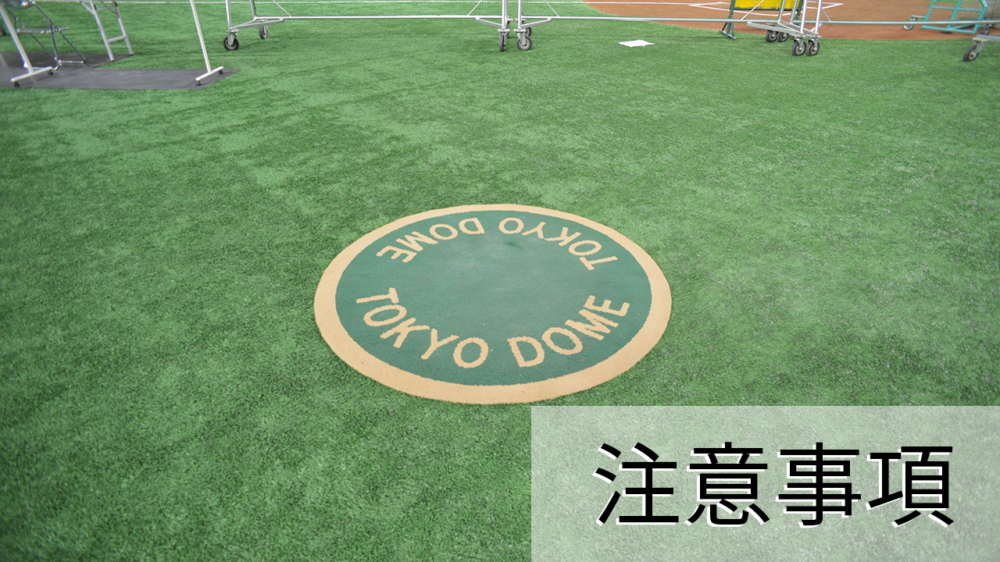
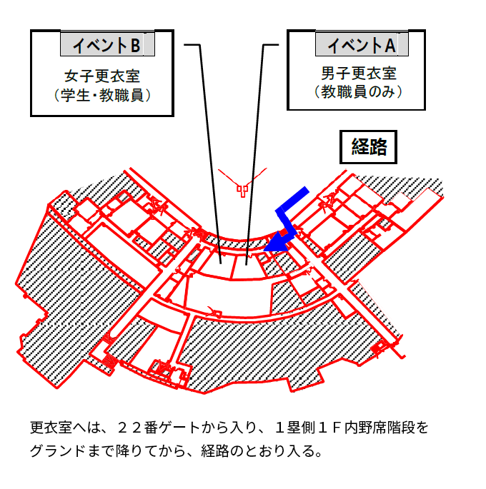

► 入場について
- 集合場所は、「２２番ゲート」です。
集合時刻までに到着したら、順次並んで入場して下さい。
- ゲートは、回転扉３台。警備員の誘導に従って入場して下さい。
- 入場したら、女子は更衣室（イベントＢ）で着替え。男子は指定の座席内野席で着替えて下さい。

- 女子更衣室に行く経路は一度グランドに降りますので、あらかじめ運動シューズに履き替えてください。
- ・着替え後は、指示があるまで指定された座席でスタンバイしてください。
- メイン会場の準備が完了したら放送で合図をしますので、グランドに降り、準備体操が行われます。
► セキュリティカードについて
- 不審者侵入防止のため、２２番ゲートから入場する時に、セキュリティカードのチェックを行います。
- セキュリティカードを忘れた場合は、ゲート横受付にて学籍番号と氏名のチェックを行います。
- なお、入場時には同時に手荷物チェックが行われます。危険物（ビン、カンほか）を持ち込まないで下さい。
► 服装、シューズについて
- 服装は体操着が必須です。（ジーパン、スラックス、ワイシャツ不可）召集の時点でチェックがあります。
体操着以外の選手は出場できません。（ウルトラクイズ含む全種目）
- シューズは運動用シューズを着用して下さい。スパイク、ゴムスパイク、トレッキングシューズなど、
靴底がデコボコしたものは不可。召集の時点でチェックがあります。靴によっては競技参加できない場合があります。ハダシ厳禁。
- グランド内において、装飾品（ネックレス、指輪、イヤリング、ピアス、ピン止め、安全ピン等）の着用は、
一切禁止します。着替えの時にはずしてください。
- メガネは禁止ではありませんが、割れてケガにつながったことがあります。
競技参加の際は着用をしないことを推奨します。
- コスプレ、着ぐるみに関しては、一般常識に反するものや、
競技特性を考慮した上で、実行委員が危険と判断した場合は、
着替えを指示します。競技に参加できない場合もありますので、
良く考えて着用するようにしてください。ハダカ厳禁。
► 食事・飲料について
- フェスティバル実施中、感染防止の観点から食事をすることは禁止とします。お菓子等も不可です。
- 東京ドーム入場前に食事等は済ませてください。途中外出は出来ません。
- 飲み物は、ペットボトルまたは水筒で持ち込んで下さい。（ビン、カンは×）座席及び養生シート上の指定場所で飲んで下さい。
- 会場内にも売店がありますが、数に限りがあるため自宅近辺で準備する事をお勧めします。
► オープニングについて
► 各競技の選手召集について
► 応援について
► 貴重品について
- 貴重品は、原則的に持ち込まないでください。各自の持ち物は、各自で管理して下さい。
- 各自の荷物は、クラス別座席に置いて下さい。
- 盗難にはいっさいの責任を負いかねます。貴重品を座席においたまま競技に参加しないようにして下さい。
- 競技参加時は、クラスの友人に預けるなどして各自管理徹底をお願いします。
- 女子更衣室（イベントＢ）に荷物を置かないようにお願いします。
- 有料ロッカーが少しだけあります。
► タバコ・ゴミについて
- 喫煙は喫煙所（１塁側内野席１Ｆスタンド後方 コンコース）で行って下さい。喫煙所以外の場所では厳禁です。
- 喫煙所は１箇所です。あまり広くありませんので、当日は禁煙に努めるなど、みなさんの協力をお願いします。
- 座席、通路、トイレでは禁煙です！！
- ゴミは、各自でドーム内にあるゴミ箱に捨ててください。ゴミの分別（ペットボトル、可燃、不燃）に協力して下さい。
► けが、体調不良について
- 競技中の突発事故によるケガなどに対しては、実行委員が対応します。
- それ以外のケガ、体調不良の学生は、「救護係」まで申し出て下さい。
► 立入禁止区域について
- 本校関係者が立ち入ることができる場所は、２２番ゲートから１塁側・3塁側の１階内野席スタンド
およびその周辺とトイレ、喫煙所、ならびに グランドのみです。
- 標識やフェンスで区分し、警備の先生が立ちますので、標識や先生の指示に従い、立入禁止区域には、侵入しないようにして下さい。
► フィナーレについて
- 閉会宣言を行います。その他は割愛します。
- フィナーレが始まったら、禁煙です。
► 終了後の退場について
- 終了後、まず女子が更衣室に移動して着替えます。着替えが済みしだい、入場と逆経路で２２番ゲートから退場して下さい。
- 男子はクラス別座席で着替えます。速やかに着替えを済ませて、２２番ゲートから退場して下さい。